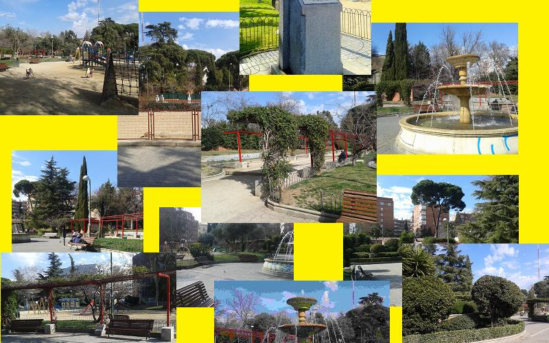

Michel Galiana (c) 1992 |
Transl. Christian Souchon 01.01.2006 (c) (r) All rights reserved |
Note :
Ceux qui connaissaient Michel Galiana s'étonneront de le voir fumer la pipe dans de poème sur l'absurdité du monde. Il fumait "en cachette" et l'on a retrouvé chez lui des pipes et du tabac.
Commentaire du poète américain Poetry Hound:
Ce poème regorge de descriptions inutiles et sans portée aucune. Mais la strophe finale est aussi poignante que fascinante. Le poème gagnerait en impact s'il était distillé en 2 ou 3 strophes."
Réponse du poête américain, Beau Golden:
"J'adore les détails, les images et la division en strophes telles qu'elles sont. Je ne changerais rien! Poe aurait-il dû abréger le Corbeau?
Quel dommage que votre frère soit décédé. Il avait sans doute encore tant de choses à partager. Quel portrait magnifique il sait dépeindre avec ses mots.
Son Art est immortel."
Auparavant le traducteur avait publié la réponse suivante à la remarque de Poetry Hound.
"Merci, Poetry Hound, pour votre commentaire.
Je dois rappeler que l'auteur de ce poème est mon frère, décédé en 1999 et que mon intervention se limite à traduire en anglais ces textes rédigés à l'origine en français pour les rendre accssibles au large public d'Internet.
C'est la première raison pour laquelle je ne me sens pas le droit de reprendre la distribution en strophes retenue par l'auteur, comme vous le suggérez.
La seconde raison est qu'un examen attentif du poème révèle une stucture très élaborée qu'il serait dangereux de bouleverser ou de détruire: la description d'un square qui se transforme peu à peu en un macabre théatre de pantomime.
Cette transmutation ne commence pas à la dernière strophe. Toutes les strophes suggèrent ce qui est clairement énoncé dans la dernière d'entre elles par l'empilement des mots "tombeaux" et "morts" (cité deux fois).
Le caractère poignant du texte est dû à la juxtaposition:
de cette lente et patiente progression et de cette fin d'une dramatiquedensité,
de ces vagues allusions répétées à quelque danse macabre moyenâgeuse et de la brutale révélation finale pour laquelle on appelle un chat un chat et la mort par son nom.
Ces allusions sont, entre autre:
l'absence d'éléments vivants dans le paysage entièrement inerte (pierre, sable, papier, verre, bois, pas d'herbe...), ce qui fait penser à un décor de théatre,
un public disposé comme dans un théatre (ces fantômes sans visage et sans âge) et des acteurs.
un éclairage artificiel qui ne projette point d'ombre et que donne un soleil pâle et froid
des costumes sans couleurs, comme il convient à des fantômes (à l'exception des petites filles, lesquelles s'affairent à des tâches sans issue, tout comme les autres intervenants.
Acteurs symbolisant des catégories sociales dont ils portent les attributs comme dans la tradition médiévale: casquettes, journaux sérieux, etc...
L'arrangement de ces éléments descriptifs et allusifs précédant la révélation finale est, lui aussi, remarquable:
Décor, limites du théate, éclairage, public, joueurs de cartes bruyants, couple âgé, joueurs de cartes silencieux, tricoteuses et petites filles, personnages silencieux (y compris le poète, lui-même), éclairage, silence, moineaux (peut-être l'intrusion de la vie dans ce monde de mort), le temps suspendu, le décor à nouveau et la référence à l'illusion du bonheur (le sujet de la pièce), révélation, limites duthéatre. Une liste dont le caractère presque cyclique ne peut qu'être intentionnel et qui rappelle les anciennes ballades anglaises où les dernières strophes répètent celles du commencement."
Whoever knew Michel Galiana will wonder that he is depicted as a pipe smoker in this poem on the world's absurdity. He smoke "on the sly" and several pipes and pipe tobacco bags were found in his apartment.
Comment of the American poet Poetry Hound:
"This poem has a huge amount of unnecessary and inconsequential descriptions. But the final stanza is poignant and fascinating. The poem would pack more of a punch if it were distilled into 2-3 stanzas."
Answer of the American poet, Beau Golden:
"Well I love the detail and imagery and stanzas just as they are. I wouldn't change a thing! Should Poe have abbreviated the Raven? Sad, your brothers leaving, I'll bet he had a lot more to share. Such a great portrait he paints with words. His Art lives on."
Beforehand the translator had posted an answer to Poetry Hound's remark as follows:
"Thank you, Poetry Hound, for your comment.
To make things clear, the author of this poem is my brother who died in 1999.
My work is limited to translating these texts originally written in French, so as to make them accessible to the larger Internet audience.
That is the first reason why I dont feel free to rearrange the distribution in stanzas adopted by the author, as you suggest it.
The second reason is that a careful examination of the poem reveals a well thought out structure which it would be hazardous to upset or to destroy: a description of a public square that turns gradually into a macabre pantomime theatre.
This transmutation does not begin with the final stanza; all stanzas hint at what is clearly proclaimed in the last one with the piled up words graves, dead, deathly.
The poignant effect is reached by the juxtaposition:
of this slow and patient progression and this compact ending
of the repeated vague allusions to a medieval danse macabre and the final crude unveiling, whereby a cat is called a cat and death is called by its name.
These hints are among others:
Absence of living elements in the landscape, only dead materials: stone, sand, paper, glass, wood, no foliage, no grass etc. evoking a stage setting.
Artificial lighting (no shadows, pale cold sun)
Theatre-like arrangement of audience (the faceless, ageless wraiths) and actors
Light coloured costumes as suits phantoms, (with the exception of the little girls who nevertheless are engaged in a hopeless work in the very same way as the other characters)
Actors symbolising and bearing the insignia of social classes according to the medieval tradition: caps, serious newspaper, etc..
The succession of these descriptive and allusive elements before the final revelation is also remarkable:
Stage setting, theatre boundaries, lighting, audience, loud card players, old couple, silent card players, knitting women and little girls, silent characters including the poet, lighting, silence, sparrows (perhaps living intruders in this dead world) , still standing time, stage setting again with mention of the illusion of happiness (the subject of the play) , revelation, theatre boundaries. A nearly cyclical listing which must be intentional and reminds of the ballads of old where the final stanzas repeat the introducing ones."

Listen to "A public garden in Madrid" in English>